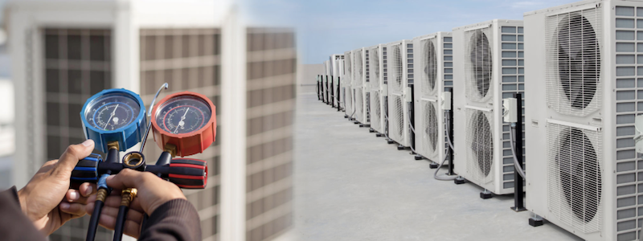

About us
Keerthan MEP Engineers (KMEP) stands as your trusted partner in MEP engineering solutions, originating in Chennai on October 22nd, 2022. Rapidly evolving into a dynamic force within the industry, our journey is rooted in principles of innovation, precision, and unwavering customer commitment.
From our humble beginnings last year, we've grown significantly, solidifying our position as a respected entity in MEP engineering. The K-MEP difference lies in our innovative approach, execution precision, and a steadfast dedication to exceeding client expectations. As we express gratitude to clients, partners, and our team, K-MEP remains poised for continued growth, eagerly embracing future opportunities in engineering excellence.
The Company's strengths lie principally in :
The design and
manufacture of industrial equipment
Management and execution
of air conditioning and public works projects
Sourcing, installation,
and servicing of technology-based systems
Representation of global
technology leaders, serving diverse industrial sectors and
applications.